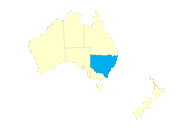
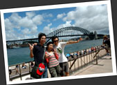
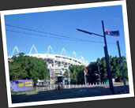
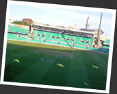

|
第十二章 迎接新的一年，簡單的日子就快樂 12. A New Beginning |
 |
新年的煙花
再次回到悉尼，平淡但知足的生活依然．剩餘下來的行程都已經安排好，我也沒有甚麼好擔心的了．新的一年很快就要來臨，我回望過去的一年，真的百般滋味在心頭．從我辭掉工作，到準備行程，離開親人，來到澳洲做個無知小子，在亂闖亂試碰灰，然後豁然開朗，遇到自己真心歡喜的地方，得到刻骨銘心的純真友誼，再展開我的大旅行......上過山下過水，嘗試了很多從未試過的工作和玩意，還考了個潛水執照......自問這一年所得到的經歷，是待在香港一輩子也無法得到的．當初過來澳洲的決定是完全沒有後悔哦！也許事業上我比在香港的朋輩慢了一年，但我所擁有的卻是多少錢都買不到的東西．這是滿籃子的回憶，也是一份信念．正如比利時女孩 Bili Van 所說，這一刻我真的覺得自己 very rich inside．來到旅程的尾聲，我只希望過一些知足常樂的生活．縱使如今我是待在人馬混雜的悉尼，或將來回到更加人馬混雜的香港，我也要抱著在紐西蘭的湖邊獲得的那份感動．一份為生存在世上每一天而感恩的感動，感謝女友對我出走的體諒，感謝家中父母支持我這個旅行，替我打點一些留在香港的繁瑣事務．在這一刻，我覺得自己是世界上最富足的人......新的一年到來，我也是裏裏外外的改變了，新的人生正在等待著我......
我跟著 Leo 和 Tina 一起去看悉尼港的新年煙花匯演．澳洲人平時生活單調，在此類喜慶日子，人們自然空群而出趁熱鬧．悉尼港的擠迫程度絕對不遜新年煙花時香港維多利亞港的盛況．我們早早就去了悉尼港佔個好位置，足足等了十個小時才看到煙花呢！漸漸一班在網絡聯繫好的台灣背包族一個個的加入我們，我變成了混在一班台灣人中的香港人，Leo 還帶了幾塊台灣旗在到處揮動呢！後來香港情侶阿明和 Nicole 加入，我才沒那麼突兀吧！說實在的，自問國語也不太靈光，而我又不喜歡對著中國人說英文．但 Leo 和 Tina 總是很包容，老是說："其實你已經說得不錯了，這不是你的母語嘛！" 他們不時跟我學廣東話，最喜歡不停說："三年又三年，三年又三年......" 但若果說複雜一點，Tina 就大叫："好難哦......"
至於悉尼的煙花，是出乎意料的精彩．以前認為香港維港的煙花已經很不錯，但悉尼的煙花則更加懂得運用附近環境．以悉尼港大橋和歌劇院作為主體的，配上煙花效果，既是獨特也起了襯托作用，平心而論，我比較喜歡悉尼的煙花．
表演結束後，悉尼市內到處充滿了要回家或要去狂歡的人，我和 Leo 及 Tina 一起回去，心中又是想，不知這一刻香港的親人在做甚麼？看看手錶，因為時差關係，他們還未踏進新的一年呢！
球場拾垃圾記
來到澳洲，一眾日韓人士因為英語能力有限，不是太多人能夠在城市找到好工作．多數人都是到在城市或者農場做"多賣力而少說話"的工，又或者替日本老闆，韓國老闆打工．澳洲太受日韓人士歡迎，個個前仆後繼要來到這個國家闖闖，有時感覺澳洲人對亞洲人有種根深蒂固的形象，特別在悉尼這種大城市．就像我來到會計師樓辦退稅的事情，我跟會計師言談流暢．這名會計師問我來自何方，我說我來自香港．他聽後說連說怪不得怪不得，"Your English is too good to be a Korean" 可見他對韓國人的感覺．歐洲背包族的英文能力普遍較好，但我也遇過不少英語說得一團糟的歐洲人，還是來自英國的背包族日子最容易......人在異鄉，當個遊客，吃喝玩樂很簡單．但若果要落地生根，打進主流圈子，是兩碼子的事情．
我聽說，日本老闆對待日本人很好，這也令到很多日本人來到澳洲，卻只懂得活在日本人的圈子之內．韓國老闆大概和中國老闆差不多，都以刻薄成性聞名．不過無論日本人韓國人，兩者都是個十分團結的民族，他們自家的強大支援令我咋舌．在澳洲，有日韓人士開的旅館，日韓人士的報刊雜誌，日韓人士的網絡社群，日韓人士的升學中心，日韓人士的工作介紹所......反觀我們香港人，來升學移民的多不勝數，來流浪的卻是小貓一兩隻，到處跌跌碰碰，又或者依靠人家的情報生存．這是因為香港人愛獨立？還是因為香港人不團結？還是純粹因為風氣不盛？這點我沒有結論．
在消費高昂的澳洲，韓國小子嚴勝鎔也需要打工幫補支出．很快他的韓國朋友 Doohe 便介紹了他一份工作，是到大球場 Sydney Cricket Ground (SCG) 做比賽後場地的清潔工作，常常一做便是通宵．薪金還算可以，起碼比在 Chinatwon 打黑工的工資高．有一天，勝鎔忽然問我："Auch，你需要錢嗎？我們一起去工作哦！" 其實我快將離開悉尼，這份工也打不長．錢當然是來者不拒，但我也不用急著打工．問題是如今每天過著如此閒適的日子，也真的想動動身子，去見識一下到澳洲大球場拾垃圾的滋味．我於是答應跟勝鎔和 Doohe 一起去工作，傍晚時份，我們匆匆吃過晚餐，便出發從旅館徒步到 SCG．來到場地，才發現這兒簡直是韓國人的天下！接下這份差事的老闆是韓國人，負責管理我們清潔工的主管是韓國人，來做清潔工的也全是韓國青年，間中混雜少許日本人，還有我這個唯一的中國人代表．主管分配工作時，說的全是韓語．我自然半點也不明白，幸好勝鎔還很照顧我．也是得到勝鎔和 Doohe 說情，主管才會讓我工作．Doohe 還跟我說："We Korean people, fix everything!" 我曾經聽金相希說，韓國人和蒙古人本是同源．從韓國人的豪情，自信，誠懇，粗蠻來看，他們的民族性真的跟小說中的大漠梟雄有點相似．
除了豪邁，現實中的韓國人還十分勤奮．我們被分配了手套和垃圾袋，一班韓國人便一言不發，低著頭，彎下身子，在觀眾臺上不停的拾垃圾，拾呀拾，不論男女，他們的動作都是多麼的拼命．我在想，若果換了是香港人，一定會假裝拼命，暗中躲懶，反正工資是以時薪計算哦！我不願落後他人，也是風捲殘雲似的在觀眾席間不停執拾，比起跪在田間一整天摘葡萄，又或者一個人洗全餐廳的碗牒，這份工作不算辛苦哦！勝鎔忽然興高采烈的走過來，原來他拾到一盒尚未開封的草莓！我們兩個躲了起來，偷偷的興奮地一起把那盒草莓吃了！之後我們便展開了球場尋寶遊戲，勝鎔拾到 20 cents，我拾到一瓶未開封的可樂，Doohe 最利害，拾到一整袋葡萄！還說今天拾錢不夠多呢！可惜原來今天澳洲隊勝出了，賽事告一段落，今天的工作也特別少．要再次工作的話，便要等下一輪的賽事．而我離開悉尼在即，也沒有機會再去拾垃圾．不過，這一次經歷卻很是有趣．
(第十二章完)